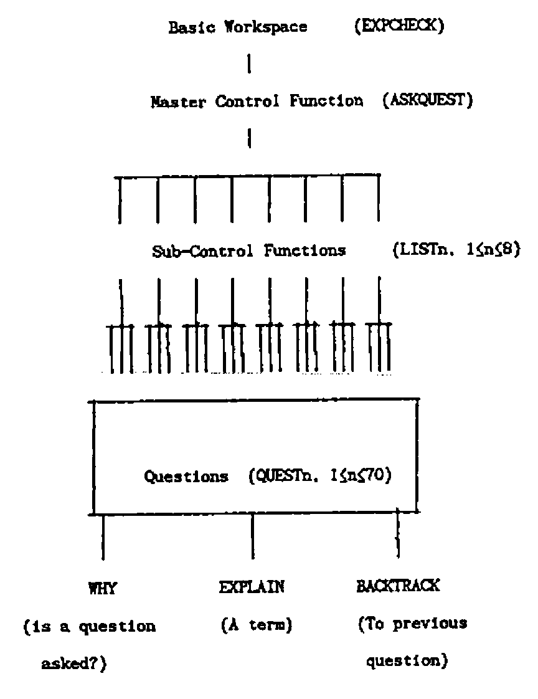

Expcheck: Intelligent Diagnostics
Vector 4:2, page 83
Transcribed from the printed issue; not yet reviewed. Read it in the PDF of the issue, page 83
Introduction¶
Much discussion has been recently devoted to the question of whether or not APL can be used effectively for programming within an artificial intelligence enviroment. The major arguments appear to centre on how one can mimic the various facilities that are available in fourth-generation languages within the APL environment, for example the use of nested arrays in APL2 to mimic the procedural structure of LISP. However, a more serious question that should be considered is how to construct a suitable rule-base, that can be easily referred to from within the APL environment.
In the context of a project (funded by the Alvey directorate) to develop a general system for experimental design, a diagnostic system for spotting problems with proposed designs has been constructed. Written in APL, ExpCheck uses file management to control the rule-base that assists in the detection. The way in which the system works goes some way towards solving the problems mentioned.
Background¶
The traditional method for developing rule bases for intelligent systems is by discussing with an expert how decisions are reached in their specialist area. An alternative to this is to ask what questions would be asked if a problem was suspected, or if someone wanted to check a solution to a problem. Such checklists for experimental design have been in existence for some time, but for the purposes of this project ‘Statistical Checklist 1: Experimental Design’ by J.N.R. Jeffers was selected.
In order to try and gain further insight into the philosophy of designing an experiment, it was decided to try and build a diagnostic system with this checklist as the basis. For the sake of simplicity, the assumption was made that the answer to each question was either ‘Yes’ or ‘No’. Starting from this point, a network of paths between the questions can be built up, including an indication of when problems are detected. This semantic net forms the structure of the system, while the questions, and the paths linking them, form the decision-making rules required.
Structure¶
Each question in the checklist is represented by a relatively straightforward APL function consisting of the following parts:
- The question itself, expressed in a (hopefully) understandable form.
- The action to be taken, dependent on the final answer given. A global variable, N, denotes which question to ask next. The action will either be to change this, or to give a diagnosis of the problem if one is suspected.
- Access to various help facilities. These are explained later.
Example 1 shows what one of the questions looks like in APL form. The global variable ROUTE is used as a store of the sequence of questions asked on the design being checked.
QUEST12;X
---------
[1] BLOCKBLANK 12 ⍝ Print 12 blank lines.
[2] ⍝ Question part 1 !
[3] L6: Can all of the combinations be achieved in practice ?'
[4] BLOCKBLANK 12
[5] X←1↑⍞
[6] →(X='Y','B','W','R','H','E')/L1,L4,L5,L6,L8,L10
[7] →L2
[8] L1:'Are all of these combinations realistic in the context of your'
[9] 'experiment ?' ⍝ Question part 2 !
[10] X←1↑⍞
[11] →(X='Y','B','W','R','H','E')/L3,L4,L5,L6,L8,L10
[12] L2:'The reasons why this may occur are many and varied. There may'
[13] 'be factors you are using which do not have any effect on the '
[14] 'results. There may be a large number of levels within'
[15] 'each factor. Please could you take some time to think about'
[16] 'your treatments. The restart code for this problem is 11.'
[17] n←'STOP' ⍝ Action when answer is no
[18] →0
[19] L4:n←⍕1↑¯2↑⍎route ⍝ Backtracking
[20] →0
[21] L5:WHY 12 ⍝ Why is question 12 asked
[22] →L6
[23] L8:HELPLINE ⍝ Print a summary of the commands
[24] →L6
[25] L10:DEFINE ⍝ Dictionary access program
[26] →L6
[27] L3:n←'13' ⍝ Action when the answer is yes
∇
Example 1: Question Function
There are seventy questions in total, divided into eight groups, representing the eight stages of setting up a design. Each group of questions is stored in a component file. A separate function is used to maintain control over each section of the checklist, as well as giving a brief explanation of the things been considered. At the end of the section, the option is given of stopping to consider the results so far instead of carrying on.
Example 2 shows the control function for Section 6, where the randomisation procedure is checked.
LIST6;X;Y
---------
[1] BLOCKBLANK 12
[2] ⍝ Introductory explanations
[3] 'SECTION 6 - Randomisation''
[4] '========================='
[5] 'The randomisation of allocation of treatments to plots/units is'
[6] 'considered in these questions.'
[7] 'There are 6 possible questions to answer in this section.'
[8] 'Press any key to continue.'
[9] BLOCKBLANK 8
[10] Y←INKEY ⍝ Accepts the code for the key depressed
[11] 'R' USE 'SECTION6.APL' ⍝ Open the relevant component file
[12] L1:→((⍎n)>52)/L2 ⍝ Have we run out of questions?
[13] CLS ⍝ Clear the screen presently showing
[14] route←route,' ',n
[15] ⍎X←⎕FX GET n←(⍎n)-46 ⍝ Get and exc the relevant question function
[16] Y←⎕EX X ⍝ Remove the question from the active workspace
[17] →(∧/n∊'0123456789')/L1
[18] L2:Y←RELEASE 'SECTION6.APL' ⍝ Close the component file
[19] →(∧/n∊'STOP')/L3 ⍝ Has a problem been detected?
[20] '*****End of Section 6*****'
[21] 'Do you wish to suspend the run now ?(Y/N)'
[22] →((1↑⍞)='Y')/L3
[23] flag←0
[24] →0
[25] L3:flag←1
∇
Example 2: Sub-control Function
The eight control functions are themselves stored in a component file, which is accessed as necessary by a master control function. This function forms part of the control workspace, appropriately named EXPCHECK. This workspace contains management functions, general explanations of the system and the global variables used to act as the fact base for the system.
Help Facilities¶
A number of simple help facilities are available to the user. It may be that a user would want to change the answer to the previous question. This is possible because the route taken through the checklist is stored, and backtracking to the previous question is accomplished by executing:
… thus giving N the value of the last question asked.
A simple dictionary of terms is included with the system, and this is easily accessed by answering E(xplain) to a question in the list. Similarly, a component file with explanations of the reasons for asking each question is included, and this can very easily be called up.
Figure 1 shows the overall structure of ExpCheck in a very clear and simple manner.

The results of any run through the system, the questions asked and facts gathered, are stored in a reference file for recall at a later date, or in a future run. The name of the file is used as a reference point.
Dialect Used¶
ExpCheck was originally conceived and written in IBM APL Version 2, running on an IBM AT with 640K of memory available. It makes use of a number of file management and utility functions. More recently, an APL*PLUS version has been prepared, and this appears to work reasonably well on IBM compatibles as well.
In both cases, the required workspaces and files fit onto one 5 1/2 inch floppy disk, and consist of:
EXPCHECK.APL Master Workspace
EXPQUEST.APL/ASF Sub-Control Functions
EXPDEFS .APL/ASF Dictionary
EXPWHY .APL/ASF Explanations
SECTION1.APL/ASF ┐
SECTION2.APL/ASF │
SECTION3.APL/ASF │
SECTION4.APL/ASF ├------ Questions to be asked.
SECTION5.APL/ASF │
SECTION6.APL/ASF │
SECTION7.APL/ASF │
SECTION8.APL/ASF ┘
APL/ASF indicates the use of IBM APL V.2 or APL*PLUS respectively. The system is currently at a development stage, and it is hoped that local trials can begin in the near future.
Answers to our Questions?¶
Can we build a working expert system in an APL environment? The answer appears to be yes. By making each rule an APL function, and storing them in a component file, we have a flexible and powerful rule base from which to work. In addition, because the system works with such basic components, debugging and updating can be very easily accomplished. New rules can be added on, and a record of unused rules is very easy to maintain as a global variable.
Storage of any facts is also straightforward. ExpCheck always stores the results of a run for future reference, and gives a printed report of the determined facts. As the facts are in the active master workspace, updating can be accomplished with a simple line of code.
There are still some questions that remain to be answered on this area, but ExpCheck and the lessons learnt from deriving the system provide a basis on which to continue striving for those answers.
Mike Williams
Department of Statistics,
University of Newcastle upon Tyne,
NEWCASTLE NE1 7RU